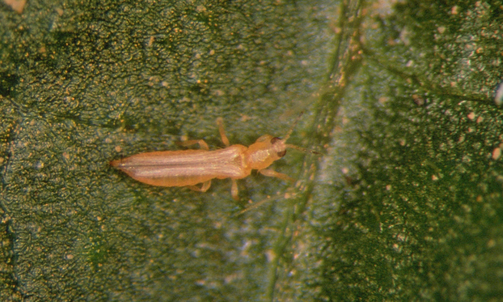
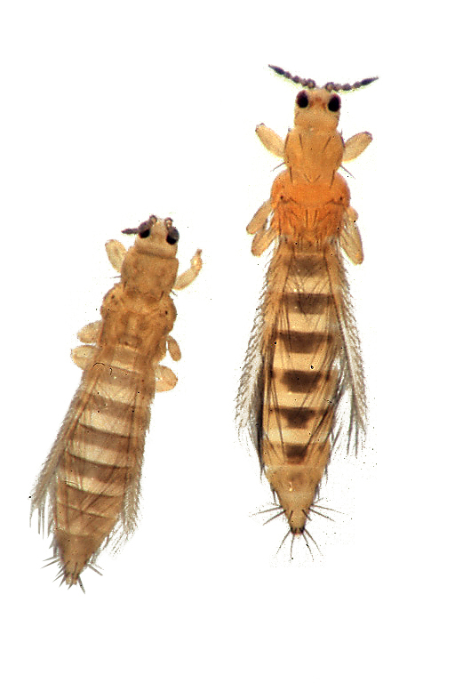
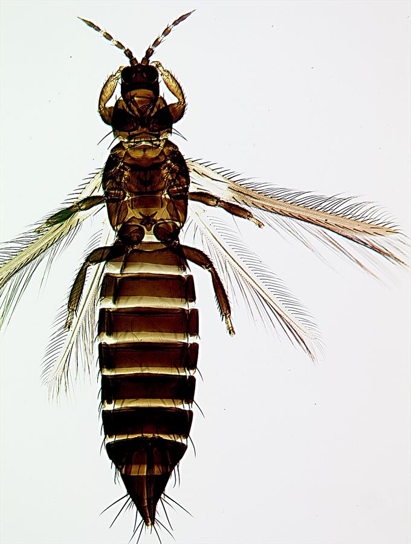

🔬 Famille Thripidae
La famille des Thripidae est la plus importante du sous-ordre Terebrantia, comprenant 276 genres et plus de 2000 espèces.
Cette famille inclut de nombreuses espèces d\"importance économique majeure, notamment des ravageurs des cultures légumières,
fruitières et ornementales. Les thrips de cette famille sont caractérisés par leur ovipositeur courbé ventralement et leurs
ailes pointues et étroites.

Thrips californien
Frankliniella occidentalis
📏
Taille:
1-1.4 mm
🎨
Couleur:
Rouge au jaune et au brun
🏠
Habitat:
Arbres fruitiers, maraîchage, plantes ornementales

Thrips du tabac
Thrips tabaci
📏
Taille:
1-1.3 mm
🎨
Couleur:
Jaune pâle à brun foncé
🏠
Habitat:
Cultures légumières (oignon, tomate)

Thrips de Kelly
Pezothrips kellyanus
📏
Taille:
1.6-1.8 mm (♀), 1.2-1.6 mm (♂)
🎨
Couleur:
Jaune pâle à brun foncé
🏠
Habitat:
Agrumes